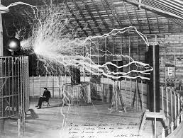
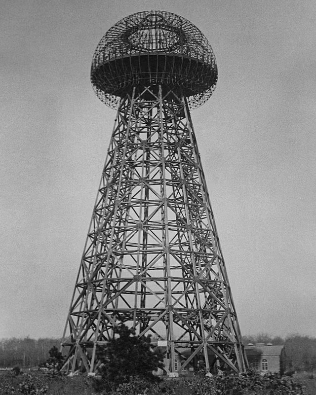

1856 — 1943
Nikola Tesla
The man who invented the twentieth century.
"If you want to find the secrets of the universe, think in terms of energy, frequency and vibration."

The man who invented the twentieth century.
"If you want to find the secrets of the universe, think in terms of energy, frequency and vibration."
"The present is theirs;
the future, for which I really worked,
is mine."
B
orn during a fierce lightning storm in Smiljan, Croatia, Nikola Tesla was destined to electrify the world. From a young age, he possessed a mind that operated beyond the boundaries of conventional science, visualizing complex machines completely in his imagination before ever putting pen to paper.
Arriving in America with little more than the clothes on his back and a letter of recommendation, Tesla set out to revolutionize how humanity harnessed power. His development of the Alternating Current (AC) electrical system fundamentally shaped the modern era, winning the famous "War of the Currents" and illuminating the Chicago World's Fair in 1893.
Yet, Tesla was more than an engineer; he was an uncompromising visionary. His experiments in wireless transmission at Wardenclyffe Tower hinted at a future of global interconnectedness—a dream deferred, but not forgotten. He died in solitude, but his legacy lives on in every flick of a switch and every signal transmitted across the globe.

He foresaw smartphones, wireless communication, and renewable energy decades before the technology existed to realize them.
Driven by the desire to better the human condition, he famously tore up his royalty contracts to ensure his AC system would thrive and serve the world.
Unafraid of ridicule, his ideas often alienated him from his peers. He sacrificed personal wealth for the pursuit of scientific truth.
Born at exactly midnight amidst a severe thunderstorm, an omen of his future connection to electricity.
Immigrated to the United States to work with Thomas Edison before setting out on his own path.
Invented the induction motor and filed crucial patents for the alternating current electrical system.
Illuminated the World's Columbian Exposition, proving the safety and supremacy of AC power on a grand scale.
Began construction of a wireless transmission station, aiming to provide free energy to the world.
Passed away in his room at the New Yorker Hotel, leaving behind a fundamentally changed planet.



Though he died alone and impoverished, the modern world is a monument to his genius. Every time we turn on a light, make a phone call, or plug in a device, we are thanking Nikola Tesla.